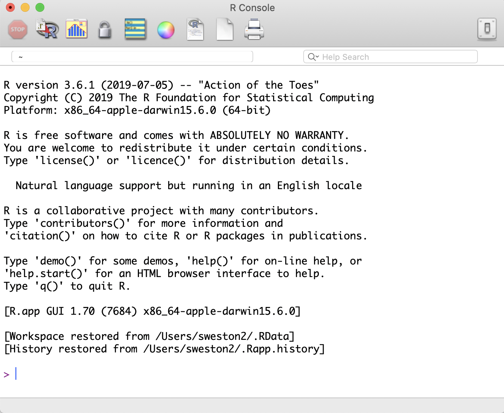
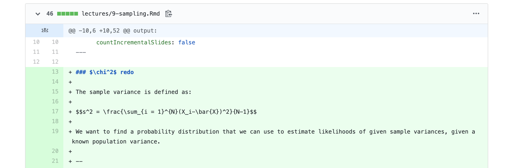

Open Science
Last time…
Critiques of NHST
Misinterpretation of p-values
- \(p\) is the \(p(D|H_{0})\) not \(p(H_0|D)\)
Promotes binary thinking
Easily gamed in the pursuit of incentives
- Recall Goodhart’s Law
Today…
The open science movement (re:statistics)
- Advancements in programming help researchers identify statistical problems
- A push for new metrics in psychology research
- Attempts to quantify the state of the field
- Development of new research practices to reinvest in old statistics
- Development analytic techniques
Open Science Movement
Sometimes labelled “the reform movement” – (psychological) scientists trying to address problems in the field identified as part of the replication crisis.
(Note, these are not distinct periods of history, nor are either of them considered over.)
Within psychology, much of the force behind this movement has been driven by social and personality psychologists.
Open because one of the primary problems of the replication crisis was the lack of transparency. Stapel, Bem, everyone did work in private; kept data secret; buried, hid, lost key aspects of research. Opaque was normal.
1. We identify problems
New methods of conducting science on science – often developed to find fraud, but super useful for detecting errors
Granularity-related inconsistency of means (GRIM) test – is the mean mathematically possible given the sample size?
Sample Parameter Reconstruction via Iterative TEchniques (SPRITE) – given a set of parameters and constraints, generate lots of possible samples and examine for common sense.
StatCheck – upload pdfs and word documents to look for inconsistencies (e.g., statistic, df)
1. We identify problems
Conceptually, psychologists have struggled with the interpretation of p-values.
Even worse, we seemed to forget some of the most basic assumptions of our statistical tests.
- What must be true about our trials to use a binomial distribution?
- Remember p-curve?
2. A push for “new” metrics in psychology research (2014)
Disillusionment with p-values led many to propose radical changes.
But the field is ruled by researchers who made their name using NHST (and very likely, many of them also used these fishing-methods to build their careers). So a softer approach was more widely favored.
Cumming (2014) proposes the “new statistics” which emphasize effect sizes, confidence intervals, and meta-analyses.
Except…
Confidence intervals are based on the same underlying probability distributions as our p-values.
And what’s the problem with meta-analyses?
3. Attempts to quantify the state of the field
The Reproducibility Project (2015) finds that most findings in psychological science don’t replicate.
Also, new methods for approaching meta-analyses are studied and popularized.
- There is a growing realization that meta-analyses cannot fix the problem – publication bias (and p-hacking) have polluted the waters.
Some more drastic changes
4. New(ish) research practices
- New(ish) tools for improving reproducibility
- New(ish) tools for reducing the file drawer problem
- New(ish) tools for limiting p-hacking
- New(ish) tools for limiting publication bias
Developing norms (not new)
R (not new)
Use of scripts – data analysis is reproducible
- Don’t be your own worst collaborator
Software is open-source
- Equity in terms of who can use the software
- Equity in terms of who can build the software!
- Newest statistical methods available right away

RMarkdown (Not that new)
Combination of two languages: R and Markdown.
Markdown is a way of writing without a WYSIWYG editor – instead, little bits of code tell the text editor how to format the document.
Increased flexibility: Markdown can be used to create - presentations (this one!) - manuscripts - CVs - books - websites
By combining Markdown with R…
Git (not new)
Git is a version control system. Think Microsoft Track Changes for your code.
- Additionally allows multiple collaborators to contribute code to the same project.
GitHub (also not new)
GitHub is one site that facilitates the use of Git. (Others exist. But they don’t have OctoCat.)
Repositories can be private or public – allow you to share your work with others (reproducible)
Git (not new)
GitHub also plays well with the Markdown language, which is what you’re using for your homework assignments.
You can link GitHub repositories to R Projects for near seamless integration.
Pair GitHub and R to make websites!
Open Science Framework (OSF.io)
Another repository, also includes version control
- Reproducibility
Doesn’t use code/terminal to update files
- Drag and drop, or linked with other repository (Dropbox, Box, Google Drive, etc)
Also great for collaborations
Easy to navigate
Can be paired with applications you (should) already use
Reducing file drawer: PsyArXiv

preprint = the pre-copyedited version of your manuscript
journals have different policies regarding what you can post. It’s always a good idea to check.
Preregistration
OSF also allows you to preregister a project.
Preregistration is creating a time-stamped, publicly availble, frozen document of your research plan prior to executing that plan.

Limit p-hacking: Preregistration
Goal: Make it harder to p-hack and HARK
- Did the researcher preregister 3 outcome variables and only report one?
- Did the research actually believe this correlation would be significant?
Limit p-hacking: Preregistration
Goal: distinguish data-driven choices from theory based choices
- Was the covariate included because of theory or based on descriptive statistics?
Goal: correctly identify confirmatory and exploratory research
- Exploratory research should be OK!
- Protection against editors and reviewers
Preregistration
A note: not everything needs to be preregistered. Only confirmatory work.
It’s ok to deviate from preregistrations if you transparently document those deviations. (See this very helpful tutorial by Willroth & Atherton (2024)]
Limit p-hacking and publication bias: Registered reports
Registered reports (RR) are a special kind of journal article

image credit: Doropthy Bishop
5. Development of new(ish) analytic techniques
More psychologists have embraced machine learning.
These largely move us away from traditional p-values and decision making becomes predicated on the ability of theoretical models to predict new sets of data.
How accurate does your model need to be for you to accept a relationship?
Most machine learning techniques adjust for over-fitting, or essentially capitalizing on the random error in your sample
5. Development of new(ish) analytic techniques
Sensitivity analyses and multiverse analyses test the robustness of a finding. These often including testing every possible set of covariates or subgroups, to see whether a particular finding is just because of a unique combination of variables and people.
Rohrer (2018)
Criticisms
Certainly there are some who argue that open science methods are broadly harmful: stifle creativity, slow down research, incentivize ad hominem attacks and “methodological terrorists”, and encourage data parasites.
It is worth admitting that, unless incentive structures don’t change, there can be harm done with adoption of these methods. But part of the goal is to change the overall system.
A more legitimate criticism is that adoption of these methods can fool researchers into believing that all research using these methods is “good” and all research not using them are “bad.”
An example: “Preregistration is redundant, at best.” (Oct 31, 2019). Szollosi et al.
And it’s worth adding that this kind of work can take longer.
Next time…
One-sample tests